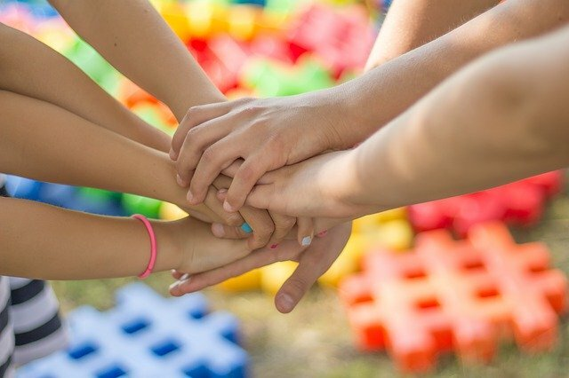

Para un primer encuentro en nuestras clases de yoga, es importante dar el espacio para conocernos. El referirse a los niños y las niñas por sus nombres, nos permite crear un vínculo más cercano y profundo, además de conocer algunos de sus intereses.
Para mantener el enfoque lúdico de tu clase, es pertinente que la acción de conocer sus nombres sea gestada desde ese mismo impulso, desde el juego.
A continuación, te dejamos algunas ideas que puedes utilizar:
Nombre y Gesto
En un círculo, cada niño/a dice su nombre y realiza un gesto corporal que lo represente. Después todo el grupo repite cada nombre y gesto.
La tela de araña
Ubicados en círculo, agarra el extremo de una madeja de lana y pásalo por el grupo, procurando que siempre sea al integrante que esté más lejos. Cada vez que un niño/a reciba la madeja debe decir su nombre y alguna cualidad, además de sostener un trozo de la lana recibida para posteriormente ser lanzada a otro/a compañero.
El Cuenco presentador
En círculo, presentamos el instrumento, quien se encargará de presentarnos. Cada niña/o deberá hacer sonar el cuenco, dando un toque con la baqueta y mientra escucha el sonido, canta su nombre al ritmo del sonido del cuenco: Jaaaaavierrrr…
Presenta a tu nuevo amigo
Divide el grupo en duplas y dales unos minutos para que se compartan su nombre, su edad, dónde viven, su color preferido, si tienen mascotas, etc. Cuando terminen, cada niño/a presenta a su nuevo amigo/a.
Mi nombre y su letra
Cada niño/a dice su nombre y la letra con la que comienza. “Mi nombre es… y empieza con la letra…”. Cada participante debe imaginar como es la postura de su letra y hacerla para mostrarla a sus compañeros/as. El resto observa e imita.
El sombrero travieso
Con alguna música de tu elección, les pides que se muevan libremente por el espacio y que en cualquier momento este sombrero travieso llegará a la cabeza de uno de ellos/as para que se presenten, compartiendo su nombre y cuál ha sido la travesura más grande que han hecho